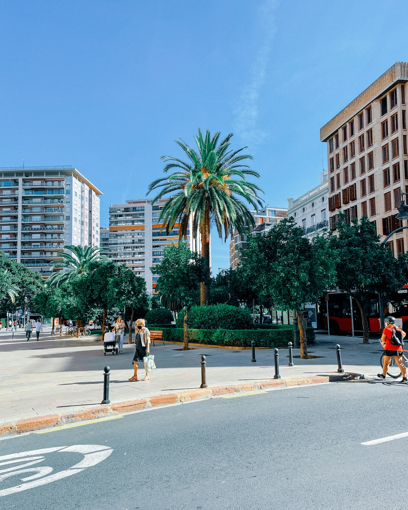

01 / Heat stress
Copernicus Climate Change Service
Record heat stress across Europe’s 2026 summer
Copernicus reports that 52% of Europe experienced at least “very strong” heat stress during the season.
FerryWellCo · What we are building
Heat can strain the body, and polluted air matters more during exertion. We bring air-quality science, heat-stress research and spatial information into services people already use. GOTime is our first prototype. We are also exploring outdoor work and insurance.

 Illustrative scenes
Illustrative scenes
What do these readings mean for your day?
Why this matters
Heat can place strain on the heart. During exertion, a person breathes more air, including pollutants. Pollen can be another consideration. What matters changes with the place, the time and what someone is about to do. A person planning an activity or a team organising outdoor work still needs an answer they can use.



Our first working prototype
GOTime begins with a planned run. In a fictional activity app, it compares available times and explains the role of heat and air quality.
Try the GOTime example ↗How we work
Our starting point is the relationship between outdoor conditions and the person or group affected by them. We bring research and spatial context into a service they already use. GOTime applies that approach to outdoor activity. We are exploring how the same foundation could support outdoor work and other settings.

The people behind the work
Our research began with air pollution, heat and cardiovascular health. We are bringing those findings into services people already use.

Another setting we are exploring
Outdoor work also involves decisions about heat and air quality. We are speaking with organisations to understand their planning needs.
Tell us about your work ↗What we are reading
Heat and air pollution shape daily life well beyond one app. These recent reports are part of the conversation behind our work.
Copernicus Climate Change Service
Copernicus reports that 52% of Europe experienced at least “very strong” heat stress during the season.
World Health Organization
WHO’s updated data show that global fine particulate matter levels have remained largely unchanged since 2020.
World Health Organization
WHO summarises the 2026 Lancet Countdown, which tracks rising heat-related harms alongside the health benefits of climate action.
Selected 17 November 2026 · External publications, not FerryWellCo research or product results
Contact
If you build a wellness platform, tell us where people plan outdoor activity in your app. We are also speaking with teams who plan outdoor work, and welcome questions about the research and GOTime prototype.